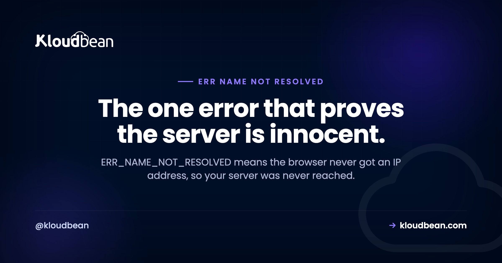

ERR_NAME_NOT_RESOLVED and DNS_PROBE_FINISHED_NXDOMAIN: Your Server Was Never Contacted

Almost every browser error tells you something went wrong while talking to a server. This one tells you the opposite: nothing was ever talked to. ERR_NAME_NOT_RESOLVED means the browser asked for the IP address behind a hostname and did not get one, so it never opened a connection, never sent a request, and never reached your web server. That single fact is worth more than any checklist, because it immediately rules out your nginx config, your application, your TLS certificate, your firewall, and your server being down. People spend hours in the wrong place on this error. The problem is name resolution, and it lives in DNS.
The hostname did not resolve to an IP address, so start with DNS rather than your server. Run dig +short yourdomain.com @1.1.1.1 to ask a public resolver directly. If it returns nothing, the problem is public: a missing or wrong DNS record, nameservers not set at the registrar, or an expired domain. If it does return an address and your browser still fails, the problem is local: flush your DNS cache, and check your VPN, resolver, and hosts file. DNS_PROBE_FINISHED_NXDOMAIN is the same failure with a more specific cause, that the authoritative server actively said no such name exists.
What this error rules out, immediately
Resolution happens before anything else. The browser turns a name into an address, then opens a TCP connection, then negotiates TLS, then sends an HTTP request. Fail at step one and steps two through four never happen.
So when you see this error, the following cannot be the cause: your web server being stopped, a firewall rule, an expired or mismatched certificate, a PHP error, a full disk, a crashed application, or a misconfigured virtual host. None of those can produce it, because none of them were ever consulted.
This is the useful contrast with the connection errors. ERR_CONNECTION_REFUSED, ERR_CONNECTION_RESET, and ERR_CONNECTION_TIMED_OUT all mean resolution succeeded and a connection was attempted, which is why those point at your server. If you are looking at one of those instead, our guide to ERR_CONNECTION_RESET and its relatives is the right place.
Chrome's heading tells you nothing, the code underneath tells you everything
The large text most people read is "This site can't be reached", and that heading is shared across a whole family of unrelated failures. It is worth training yourself to skip it and read the code in smaller type below.
| Code under the heading | What actually happened | Where to look |
|---|---|---|
| ERR_NAME_NOT_RESOLVED | No address came back for the name | DNS, this guide |
| DNS_PROBE_FINISHED_NXDOMAIN | Authoritative answer: no such name | DNS, record missing or domain expired |
| DNS_PROBE_FINISHED_NO_INTERNET | No working network at all | Your connection |
| DNS_PROBE_FINISHED_BAD_CONFIG | Resolver configuration is broken | Your machine or router |
| ERR_CONNECTION_REFUSED | Resolved, then something declined | Server, service, firewall |
| ERR_CONNECTION_TIMED_OUT | Resolved, nothing answered | Server, packets dropped |
The first two are the same class of problem with different amounts of information. NXDOMAIN is the more helpful of the two, because it means a nameserver that is authoritative for the domain gave a definitive answer, and that answer was "this name does not exist".
NXDOMAIN, SERVFAIL, and a timeout are three different diagnoses
This is the distinction that decides where you go next, and it is routinely collapsed into "DNS is broken", which is not actionable.
| Answer | Meaning | Most likely cause |
|---|---|---|
NXDOMAIN | Authoritatively does not exist | Record never created, typo, or domain expired |
SERVFAIL | The resolver failed to get a valid answer | DNSSEC problem, or broken nameservers |
| No response at all | Nothing answered the query | Nameservers unreachable, network or resolver blocked |
NOERROR with no records | Name exists, but not this record type | Missing A record while other records exist |
That last row catches people out. A domain can exist perfectly well, with MX records handling mail, while having no A record for the hostname you typed. DNS answers correctly that there is no address, and the browser reports a resolution failure. Nothing is broken in the sense of malfunctioning; a record is simply absent.
The SERVFAIL case is worth separating too, because a DNSSEC misconfiguration produces SERVFAIL rather than NXDOMAIN, and it has a distinctive signature: the domain fails on validating resolvers and works fine on non-validating ones. So it looks intermittent and user-dependent when it is actually deterministic.
Is it just you, or is it everyone?
Answer this before changing anything, because the two answers send you to completely different places. It takes one command.
# Ask a public resolver, bypassing your ISP and your own cache
dig +short example.com @1.1.1.1
# Same thing on Windows
nslookup example.com 1.1.1.1If that returns an IP address, DNS is publicly fine and your problem is local. Go to the cache-clearing section. If it returns nothing, the problem is public and everyone is affected, so keep reading.
Next, find out whether the domain's delegation is intact, which is the question people skip:
# Which nameservers does the internet think are authoritative?
dig NS example.com +short
# Ask those nameservers directly, so no cache is involved
dig +short example.com @ns1.yourprovider.com
# See the full answer, including the status line (NXDOMAIN, SERVFAIL, NOERROR)
dig example.com
# Is the domain even still registered?
whois example.com | grep -i -E "expir|status"Run that whois line early. On any domain that worked yesterday and stopped without a deploy, expiry is a leading suspect, and it is the one cause no amount of server work will fix.
The causes, ranked by how often they are the answer
1. The domain expired. Registration lapsed, the registrar pulled the delegation, and every name under it stops resolving at once. The signature is total and sudden: the apex, www, mail, everything, with no change on your side. Renew it, and be aware that restoring service after expiry is not always instant.
2. The record does not exist. Most common on anything new. A subdomain was never created, or was created with a trailing typo, or was added to the wrong zone because the domain has zones at two providers and only one is authoritative.
3. Nameservers are wrong at the registrar. You created perfect records in a DNS provider that nothing is delegated to. Your control panel shows a healthy zone, and the internet never asks it. This is why dig NS matters: it tells you who is actually being asked, rather than who you think you configured.
4. The change has not propagated. Resolvers hold answers for the record's TTL, so a change can take time to be visible everywhere. Lower the TTL before a planned change, not after.
5. Something local. Your own cache, VPN, hosts file, or resolver. Confirmed by the public resolver test returning a valid address while your browser still refuses.
6. DNSSEC is misconfigured. Usually after moving DNS providers with a DS record left in place at the registrar pointing at keys that no longer exist. Produces SERVFAIL, and breaks the domain only for validating resolvers.
7. A registry or registrar hold. Verification never completed, or a dispute. whois status fields name it, with values like clientHold or serverHold, and no amount of DNS editing overrides a hold.
Negative caching: why the record you just added still fails
This deserves its own section because it produces a genuinely maddening experience and almost nobody knows the mechanism.
DNS caches negative answers, not only positive ones. When a resolver learns that a name does not exist, it remembers that non-existence for a period governed by the zone's SOA record. So if a visitor's resolver asked for your new subdomain before you created it, that resolver has cached NXDOMAIN and will keep returning it after your record is live.
The result: you add the record, you verify it correctly against the authoritative nameserver, it answers perfectly, and the site still fails for the person who reported the problem. Nothing is wrong with your fix. A stale "no" is being served from a cache you do not control.
# Your record is live and correct at the source
dig +short new.example.com @ns1.yourprovider.com
# But a public resolver may still be holding the cached "no"
dig new.example.com @1.1.1.1
# The negative cache duration comes from the SOA minimum field
dig SOA example.com +shortThe practical lesson is about order of operations: create DNS records before you announce or link to a hostname, not after. Checking whether a name resolves and then creating it is how you teach every resolver that asked a negative answer to hold onto.
www versus the apex, and the CNAME complication
A specific, very common shape: example.com works and www.example.com does not, or the reverse. These are two separate names and each needs its own record. There is no rule that creating one implies the other.
The usual fix is an A record for the apex and a CNAME for www pointing at it. Which raises the complication people hit next: the DNS specification does not permit a CNAME at the apex, because the apex must also carry NS and SOA records. Providers work around this with ALIAS, ANAME, or CNAME flattening, under various names. If you are trying to point a bare domain at a hostname rather than an address, that feature is what you need.
; Conventional and safe
example.com. A 203.0.113.10
www.example.com. CNAME example.com.
; Check both, because they fail independently
; dig +short example.com
; dig +short www.example.comTest both names every time. Confirming one and assuming the other is how a launch ships with half its traffic broken, and it is a two-command check.
Clearing the caches that are genuinely yours
Only worth doing once the public resolver test has told you the problem is local. Otherwise you are clearing a cache that holds a correct answer.
# macOS
sudo dscacheutil -flushcache; sudo killall -HUP mDNSResponder
# Windows
ipconfig /flushdns
# Linux with systemd-resolved
resolvectl flush-cachesFor the platform-by-platform reference, including the Linux case where there may be no cache to flush at all, see flushing your DNS cache. Chrome keeps its own cache separately from the operating system, which is why an OS flush sometimes appears to do nothing. Clear it at chrome://net-internals/#dns, and note that a socket pool can hold connections too, so a full browser restart is a reasonable next step.
Check the hosts file as well, particularly on a developer machine. An entry added months ago to test a migration will happily override public DNS forever, and it produces the confusing case where a site works for everyone except the person who built it.
Where hosting fits
Being straightforward about this: Kloudbean is not a DNS provider, and no hosting platform can fix a name that does not resolve, because the failure happens before anything reaches a server. Your registrar and DNS provider own this one.
Where it does touch hosting is the order of operations when you launch. A domain has to resolve to your server before a certificate can be issued for it, since the certificate authority verifies control by making a request to that name. So a failed SSL issuance on a new site is very often this error wearing a different hat, and the fix is in DNS rather than in the certificate step. On Kloudbean, SSL is issued and renewed automatically once the domain points at your server, which is exactly why the DNS record comes first.
The rest is ordinary and useful: servers across seven clouds so you can put the origin in a sensible region, applications and databases in one dashboard, automatic backups, and a firewall with intrusion prevention configured by default. If DNS is resolving but slowly rather than failing, that is a different problem and our guide to slow DNS lookups covers it, including the resolver on your own server that almost nobody checks.

Related reading
If you are not sure which code you have, this site can't be reached maps every one Chrome shows under that headline to the layer that broke. For the errors that mean your server WAS reached, ERR_CONNECTION_RESET and its relatives. For resolution that works but drags, fixing slow DNS lookups. When the certificate is the problem rather than the name, SSL certificate errors and what SNI is. If a CDN is in front, Cloudflare 5xx codes. And for moving a site without breaking its names, migrating WordPress.
Point the name, the rest is handled.
Managed servers across seven clouds with free SSL issued and renewed automatically once your domain resolves, managed databases, automatic backups, and a firewall configured by default. From $8/mo, with free migration assistance. Start at kloudbean.com.
7 clouds and regions · Free auto-renewing SSL · Managed databases · Automatic backups · Flat from $8/mo
FAQ
How do I fix ERR_NAME_NOT_RESOLVED?
Start by running dig +short example.com @1.1.1.1 to ask a public resolver. If nothing comes back, the problem is public DNS: check that the record exists, that the registrar points at the right nameservers, and that the domain has not expired. If an address does come back but your browser still fails, the problem is local, so flush your DNS cache and check your VPN, resolver, and hosts file.
What does DNS_PROBE_FINISHED_NXDOMAIN mean?
It means a nameserver authoritative for the domain gave a definitive answer that the name does not exist. That is more specific than a general resolution failure, and it points at a missing or mistyped record, a domain that has expired, or records created in a DNS zone that nothing is delegated to.
Is ERR_NAME_NOT_RESOLVED a problem with my server?
No, and this is the most useful thing about the error. Resolution happens before any connection is opened, so your web server, firewall, certificate, and application were never involved. If your server were the problem you would be seeing a connection error or an HTTP status code instead.
Why does my site work for me but not for other people?
Usually a cached answer or a local override. Your machine may hold a valid cached record while others get the current, broken one, or you may have a hosts file entry from an earlier migration test that quietly bypasses public DNS. Test from a network you do not control, and check your hosts file.
I added the DNS record and it still doesn't work. Why?
Because DNS caches negative answers too. If a resolver asked for the name before the record existed, it cached the fact that it did not exist, for a period set by your zone's SOA record, and it will keep returning that until the entry ages out. Verify against your authoritative nameserver to confirm your fix is correct, then wait. This is why records should be created before a hostname is announced.
What is the difference between NXDOMAIN and SERVFAIL?
NXDOMAIN is a successful lookup with a negative answer: the name definitively does not exist. SERVFAIL means the resolver could not obtain a valid answer at all, most often a DNSSEC validation failure or broken nameservers. SERVFAIL has a distinctive signature, since it breaks the domain on validating resolvers while non-validating ones still work, so it looks intermittent when it is not.
How long does DNS propagation take?
It depends on the TTL on the records involved, and on negative caching if the name previously did not exist. There is no universal figure, and quoting one is guesswork. Lower the TTL in advance of a planned change so resolvers hold answers for a shorter time, then raise it afterwards.
Why does www work but not the bare domain, or the other way round?
They are two separate names and each needs its own DNS record. Creating one does not imply the other. The usual arrangement is an A record on the apex and a CNAME for www pointing at it, and if you need the bare domain to point at a hostname rather than an address, you need your provider's ALIAS, ANAME, or CNAME flattening feature, because a plain CNAME is not allowed at the apex.
Can my hosting provider fix this?
Not directly, since the failure occurs before anything reaches a server, so it sits with your registrar and DNS provider. Where it does intersect hosting is launch order: a domain must resolve to your server before a certificate can be issued for it, so a new site failing at the SSL step is often this problem rather than a certificate problem.